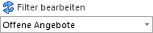
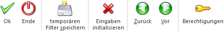

In verschiedenen Fenstern besteht mit Hilfe eines Filters die Möglichkeit eine detailliertere Selektion einer Liste oder einer Anzeige vorzunehmen. Zusätzlich ermöglicht der Filter an vielen Stellen besondere Sortierungen vorzunehmen und Summen (was soll summiert werden) zu bilden.
Die Anlage und Auswahl von Filtern findet hierbei jeweils über den Button bzw. die Auswahlliste "Filter bearbeiten" statt:

ü Neuanlage
Es wird der Button
"Filter bearbeiten" gedruckt, wobei aus der Auswahlliste kein Filter gewählt
wurde. Hierdurch wird das Fenster "Filter - Assistent" geöffnet und man steht im
Bereich Auswahl.
ü Editieren
Es wird aus der
Auswahlliste ein bestehender Filter ausgewählt und der Button "Filter
bearbeiten" gedrückt. Hierdurch wird das Fenster "Filter - Assistent" geöffnet,
der Filter geladen und man steht im Bereich Selektion.
ü Anwenden
Es wird aus der
Auswahlliste ein bestehender Filter ausgewählt und im Ausgangsprogramm eine
beliebige Ausgabe angewählt.
Hinweis
Die Anzahl der Einträge innerhalb der Auswahlliste kann über die Option "Anzahl Einträge in Filterauswahl" (WinLine START - Parameter - Einstellungen… - Register "Admin") definiert werden.

Das Fenster "Filter - Assistent" selber ist in 3 Bereiche unterteilt, welche in den nachfolgenden Kapiteln detailliert beschrieben werden:
ü Bereich "Auswahl"
In diesem Bereich
kann gesteuert werden, was getan werden soll. Hierbei stehen u.a. die Funktionen
"neuen Filter Anlegen" oder "bestehenden Filter editieren" zur Verfügung.
ü Bereich "Selektion"
In dem zweiten
Bereich "Selektion" können die Bedingungen (Selektionskriterien) des Filters
eingestellt werden.
ü Bereich "Sortierung"
In dem Bereich
"Sortierung" kann die Sortierungen der Ausgabe definiert werden.
Buttons

Ø Ok
Durch Anklicken des Buttons "Ok" bzw. der Taste F5 wird der bearbeitete Filter gespeichert und in das Ausgangsfenster übernommen.
Ø Ende
Durch Anklicken des Buttons "Ende" bzw. der Taste ESC wird das Fenster geschlossen. Durchgeführte Eingaben werden nicht gespeichert.
Ø temporären Filter speichern
Dieser Button steht in den Bereichen "Selektion" und "Sortierung" zur Verfügung, wenn ein temporärer Filter angewählt wurde. Damit besteht die Möglichkeit, den Filter nachträglich zu speichern.
Ø Eingaben initialisieren
Durch Anklicken des Buttons "Eingaben initialisieren" werden alle vorgenommenen Einstellungen verworfen und in die "Auswahl" zurückgewechselt.
Ø Zurück
Mit dem Button "Zurück" kann grundsätzlich ein Bereich zurückgewechselt werden. Da der Bereich "Auswahl" der erste ist, steht der Button hier nicht zur Verfügung.
Ø Vor
Mit dem Button "Vor" kann in den nächsten Bereich des Filter - Assistenten gewechselt werden.
Ø Berechtigung
Mit dem Button "Berechtigung" kann das Fenster "Objekt Berechtigungen" geöffnet werden, um für die einzelnen Objekte Berechtigungen für Benutzer oder Benutzergruppen zu vergeben. Nähere Informationen zu den Objekt Berechtigungen finden Sie im Kapitel "Objektberechtigungen".